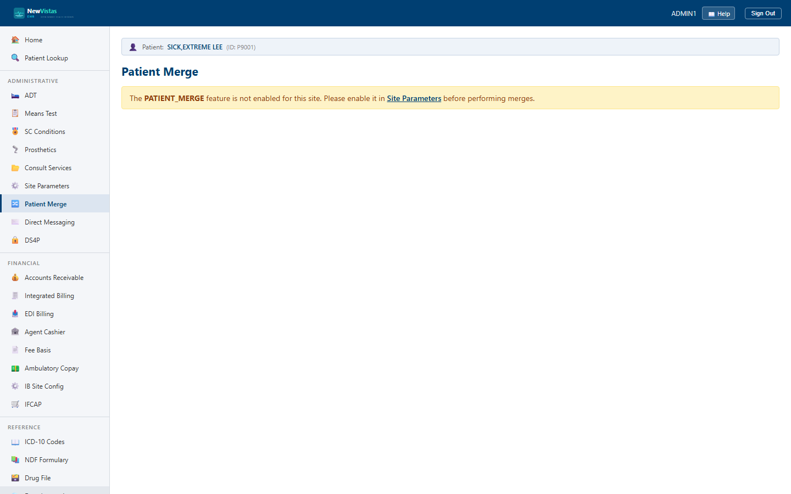

Manual › Administrator › Patient Merge
Patient Merge
When the same person ends up in the system twice — usually from a registration in two clusters — Patient Merge consolidates the duplicate into a single surviving record. All clinical data moves from the source into the target, the source is deactivated, and the source's master patient index (MPI) identity is aliased to the target.
⚠ Merging is destructive and irreversible
A merge cannot be undone. The source record is
permanently deactivated and its ICN is aliased to the
target; future lookups by the source ICN resolve to —
and are flagged as an alias of — the target. Because of this, merge is
restricted to senior registration, Health Information Management (HIM),
and administrator staff who hold the
CanMergePatients
security key. Confirm you have the correct source and target before you
proceed.
Before you begin
- You must hold the
CanMergePatientssecurity key — the workflow grain rejects anyone without it. - The
PATIENT_MERGEfeature must be enabled for your site (it is a per-site opt-in in Site Parameters). VA- and tribal-aligned profiles enable it by default. - Identify which record survives. The target is the keeper; the source is the duplicate that will be deactivated.

Merge a duplicate into the survivor
- Open Patient Merge from the sidebar under Administrative.
- Enter the target patient (the record that will survive) — by ICN or patient ID.
- Enter the source patient (the duplicate to be retired).
- Review both records to confirm they are the same person and that source and target are not reversed.
- Confirm the merge. Clinical data (allergies, problems, immunizations, and lab / order / note ID lists) moves from source into target.
What the merge does
- Moves all clinical data from source to target, de-duplicating by ID so overlapping entries are never doubled.
- Deactivates the source — its record is marked inactive and stamped with
MergedIntoPatientId= the target's ICN. - Aliases the source identity — the source ICN's MPI correlation grain and search-index entry both record
MergedIntoIcn= the target ICN, so later searches by the source ICN flag the alias. - Leaves the target unaliased — the surviving record's MPI entries are unchanged.
Idempotent, but not re-routable
Repeating the exact same merge (same source, same target) is safe — no
data is moved twice. Trying to merge an already-merged source into a
different target is refused: the alias chain is never re-pointed.
After the merge
Reload the target's Cover Sheet to
confirm the moved allergies and problems are present with no duplicates.
Opening the source record shows it has been merged into the target.